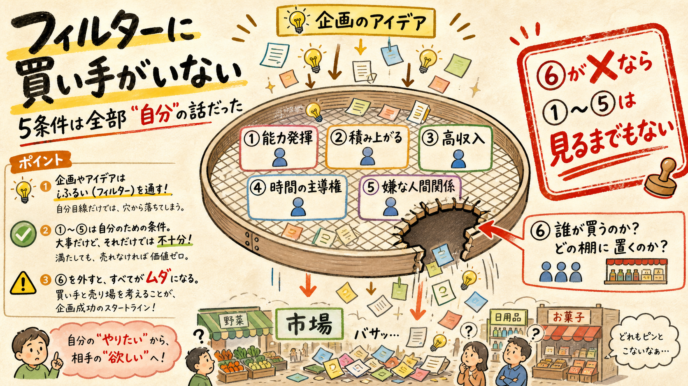
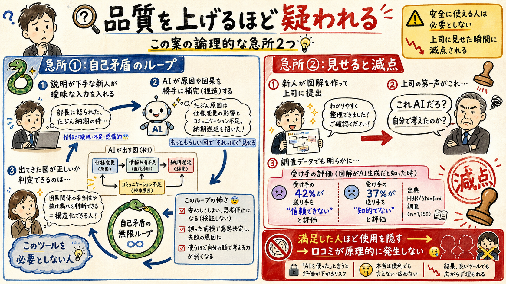
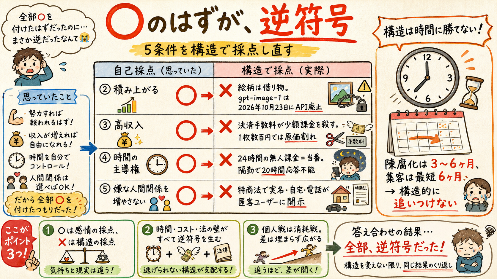
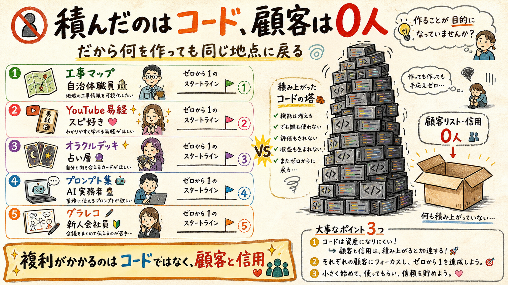
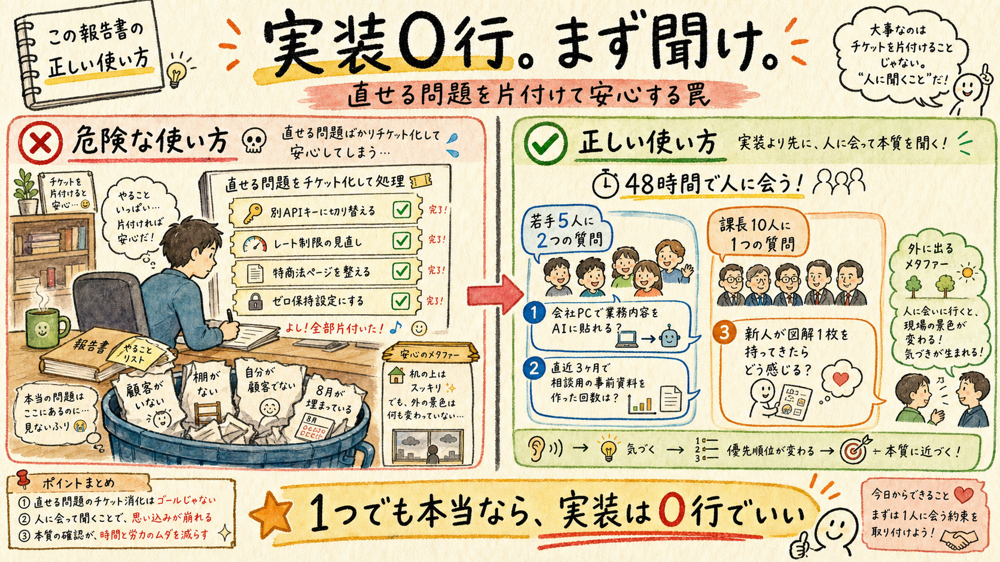

8つのレンズ（法務・原価・買い手・製品・本人適合・競争・倫理・戦略）が独立に盲点を探索し、批判役が既知の言い換えを容赦なく落として選別した。既に指摘済みの3点（無料代替・販路・飽和）の再説は0点として禁止してある。残ったのは、あなたの強みが作っている盲点だった。
8レンズ全員がこの案を5条件で採点したが、フィルター自体の欠陥は誰も見ていなかった（批判役が追加）

あなたの5条件は「①自分の能力発揮 ②積み上がる ③高収入の可能性 ④時間の主導権 ⑤嫌な人間関係を増やさない」。よく見てください — 5つとも主語が自分です。「誰が買うのか」「どこに置くのか」「そこで既に金が動いているか」を問う条件が1つもない。
これが「毎回同じ地点に戻る」理由: 長年の課題が『商売のイメージが全くつかない』なのに、意思決定装置に商売を見る目が付いていない。だから5/5で通過した案が市場で死に、また「やはり商売がわからない」に戻る。アイデアを何回変えてもこのループは終わらない — 変えるべきはアイデアではなくフィルター。
処方: 第6条件をスコアではなくゲートとして追加する。「⑥ 既に金が動いている棚に、今日置けるか（買い手が実在し、検索・回遊で見つかるか）」。⑥が✗なら①〜⑤は見るまでもない。この案の⑥は✗です。
技術で解決できない。前提が自己矛盾している

急所①: 安全に使える人は、このツールを必要としない。「説明できない人」の入力は『部長に怒られた、たぶん納期の件』程度です。ここから図解1枚を作るには、AIが因果・時系列・原因を補完＝捏造するしかない。「原因: 事前共有の不足」のような断定が図に入る。その断定が事実か判定できるのは、構造を言語化できる人＝このツールを必要としない人。価値提案（構造化の代行）と、安全に使える条件（既に構造化できる）が論理的に両立しません。
なぜ見えないか: デモは常に自分の手で回すから。あなたの入力が既に構造化されているので出力が良い。この n=1 が、ターゲットとの入力分布の落差を完全に隠しています。あなたの技術力が高いほど、AI出力の粗さを無意識に脳内で補正してしまう。
急所②: 「上司に見せる」がそのまま減点ボタン。HBR掲載のBetterUp Labs×Stanford調査（米フルタイム1,150人）では、AI生成物（workslop）を受け取った側の42%が送り手を「信頼できない」、37%が「知的でない」と評価しました。職場の成果物は「本人が考えた証拠」として読まれるため、品質を上げるほど「これAIだろ」と疑われる。品質軸の外側に評価軸がある非対称市場です。
さらに致命的な帰結: 満足したユーザーほど利用を隠す。口コミ・紹介・SNS投稿が原理的に発生せず、実績ゼロの個人が使える唯一の無料成長経路が閉じます。
※ 出典: HBR「AI-Generated Workslop Is Destroying Productivity」（n=1,150）
「既にパイプラインがある」という唯一の優位が、致命的な劣位を生んでいる
正解は『画像生成』ではなく『構造化テキスト → SVG/HTMLのレンダリング』です。ラスタ画像は誤字1文字を直せず、再生成するとレイアウトが変わる。競合Napkin AIはSVG出力でテキストを直接編集できる。OpenAI自身のベストプラクティスも「テキストは画像生成後に別途入れる」— つまり「AIに日本語を描かせる」設計はベンダー推奨と逆行しています。
反転の構造: あなたがこの設計を選ぶ理由はただ1つ、run-ai-imagesが既にあるから。資産がゼロなら絶対に選ばない設計です。SVG方式に切り替えると、原価が2桁下がり（画像 $0.05-0.21/枚 → テキスト生成1回）、リトライ地獄も、熱心な客ほど赤字になる逆選択も、画風のモデル依存も同時に消えます。これら3つは「画像生成に固執する限り」だけ存在する問題でした。
そしてもう1つ、時限爆弾。商品の正体である「グラレコ風の絵柄」は gpt-image 系に紐づいたレンタル品です。一次確認したところ gpt-image-1 は 2026年10月23日にAPI廃止（mini/1.5等は12月1日、後継 gpt-image-2 で絵柄が変わる）。有償顧客は「先月と同じ絵」を要求します。最短の廃止日10/23は、都知事杯Final（10/17）の6日後・工事マップG-Pゲート（10月末）の直前に落ちる。最重要ゲート期に、最小収益レーンの緊急移行作業が降ってきます。
※ 出典: OpenAI Deprecations（一次確認済）／ Napkin AI の SVG 編集
自己採点では4〜5/5に見える。構造で採点すると3つが逆を向いている

| 条件 | 自己採点 | 構造で採点した実際 |
|---|---|---|
| ④ 時間の主導権が増える | ○ | ✗ 24時間の首輪。Stripeの紛争回答期限は7〜21日（逃せば自動敗訴・1件¥1,500）、個人情報漏えいの速報期限は3〜5日。隔勤なら20時間近く端末に触れない。法定期限が、物理的に応答できない時間帯に降ってくる |
| ⑤ 嫌な人間関係を増やさない | ○ | ✗ 実名・自宅・電話が公開される。独立WebアプリのBtoC有償販売は通信販売＝特商法表記が必須で、個人事業者は戸籍上の氏名の表示を省略できない。①副業許可制の勤務先に露見する経路になり、②「上司の悪口」を打ち込んだ追い詰められた匿名ユーザーに、あなたの連絡先が渡る |
| ② 積み上がる（ストック型） | ○ | ✗ 借り物。絵柄はモデルに紐づき年内失効。配管の巧さ（並列生成・レース回避）は、モデル側が真っ先に吸収する層で市場が一円も値付けしない |
| ③ 高収入の可能性 | ○ | ✗ 原価割れ。決済手数料が少額課金を殺す。1枚数百円では生成失敗のリトライだけで利益が消える |
時計が2つズレている: 陳腐化クロックは3〜6ヶ月、あなたの集客クロック（実績ゼロから）は最短6ヶ月。構造的に一度も追いつけません。判断ルールとして固定してください — 「集客に6ヶ月かかる自分は、6ヶ月で消えるギャップを売ってはいけない」。
※ 出典: Stripe 紛争対応期限 ／ 個人情報保護委員会 漏えい報告義務
複利がかかる単位は「コード」ではなく「顧客と信用」

工事マップ＝自治体/土木、YouTube易経とオラクルデッキ＝スピ/自己啓発層、ヴォールト＝AI実務者、グラレコ＝新人会社員。5レーンに顧客が5種類いて、1人目の買い手が2つ目を買う経路が1本もありません。あなたはコードを5本積み、顧客を0人積んでいる。だから何を作っても毎回「販路がない」という同じ地点に戻る。案の質の問題ではなく、資産の種類の問題です。
反証テスト: 「工事マップの買い手が易経デッキを買うか」に一度でもYesと言えるか。言えないなら、5レーンは全部独立です。
これに連なる、あなた固有のパターンが3つ見つかりました。
| パターン | 中身 |
|---|---|
| Webアプリは、あなたが構造的に出荷できない唯一の形態 | 未出品在庫が2つある原因は意志ではなく商品形態。デッキ/PDFは「完成」が定義できるが、Webアプリは完成が定義できない（UI・料金・エラー処理・不正対策・モデル更新が無限に残る）。Maximizer＋Ideationは、改善余地がある限り出荷を延期する資質。最も出荷されない形態をわざわざ選びに行っている |
| 初めて「自分が顧客でない」案件 | 工事マップは乗務中の実体験から、易経もデッキもヴォールトも run-ai-images も、全部あなたの痛みが出発点。この案だけが、一度も経験していない他人の痛み（会社員として上司に怒られる）の推測から出ている。しかもあなたはタクシー乗務員で、上司も報連相の場面も社内AI規程も持たず、周りに新人会社員がいないので推測を安く反証する手段すらない |
| 探し続けた「商売の先生」は、既に提出済みの案件に無料で付いている | 都知事杯のFinal進出チームには事業化支援（マネタイズ・実証支援・壁打ち）と都との接点、Demo Dayまでの伴走が付く。First Stage結果は9月下旬、Finalは10/17。長年の課題への無料の伴走枠・行政接点・実績ラベル・toB与信が、既に提出済みの案件の延長線上に用意されている。新レーンはその勝負を薄める方向にしか働かない |
8レンズ全員が「有償で売る」という与件を一度も疑っていなかった（批判役が追加）
特商法の実名開示、カードテスティング、Stripe紛争、返金対応、免責、越境PII同意 — 洗い出された論点の相当数が「金を取る」という決定からのみ発生しています。無料で公開してリード（メールアドレス）だけ取るなら、これらは全部消え、残るのはAPI原価（日次上限で数百円）と利用規約だけ。
そしてあなたの真の欠落は「売上」ではなく「顧客リスト・信用・実績」です。¥300を誰にも売れなければ¥0だが、無料で500人に配ればリスト500件が残る — それが01と05で言った、唯一の増価資産。
検証の変数を1つに保つ: 課金の検証は「完成済み在庫（ヴォールト・デッキ）を検索流入のある棚に置く」でやる（変数＝価格）。グラレコは「無料の名刺」として導線検証をやる（変数＝集客）。1つの案に検証を2つ載せないこと。
ただし無料でも消えないリスクが1つ: run-ai-images は codex exec + ChatGPTプラン認証で動いており、他人のリクエストを自分のプラン認証で処理するのは規約違反。しかも同じアカウントでYouTube易経・オラクルデッキ・ハッカソン動画の画像も回している。見知らぬユーザー1人の違反プロンプトで、本命4つの画像生成が同時に止まります。公開するなら商用は完全別Org・別APIキーに隔離（今日30分でできる）。
最後の盲点は、あなたがこれをどう使うかの中にある

技術力が高い人は、直せるもの（別APIキー・ゼロ保持・レート制限・特商法ページ）を全部チケット化して片付け、直せないもの（顧客がいない・棚がない・上司が判定者・自分が顧客でない・8月が埋まっている）を「後で考える」に送ります。デッキとヴォールトで、既に2回起きた経路です。
正しい使い方: チケットを切ることではなく、「01・02・05・09 のどれか1つでも本当なら、実装は0行でよい」と先に決めること。実装に触れる前に、48時間のヒアリングだけをやる。判断を動かすのはそれだけです。
48時間で聞く3つ（実装0行）: